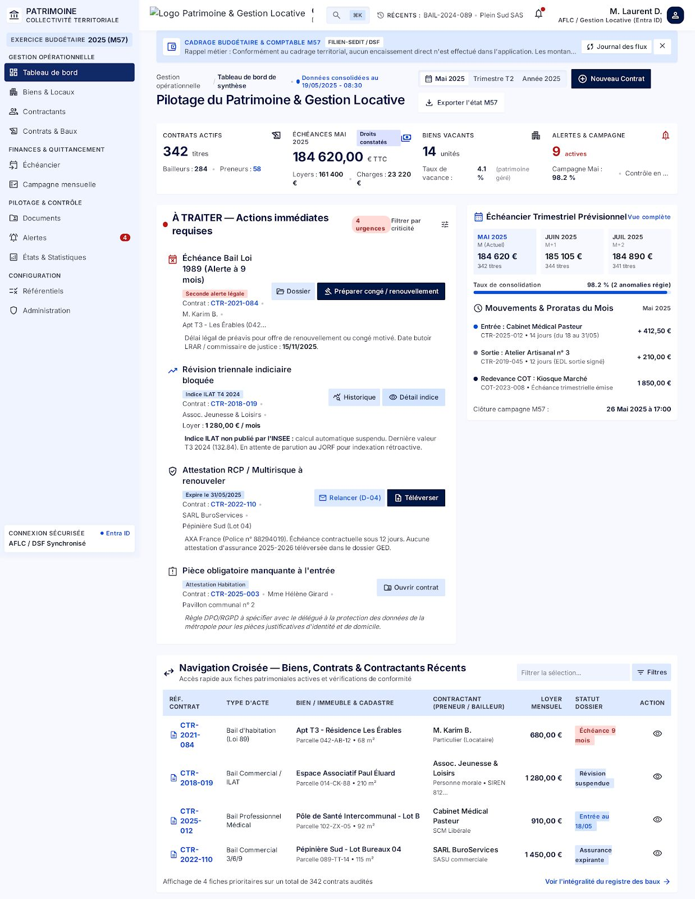
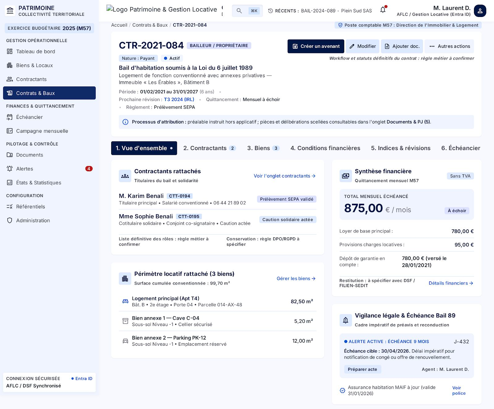
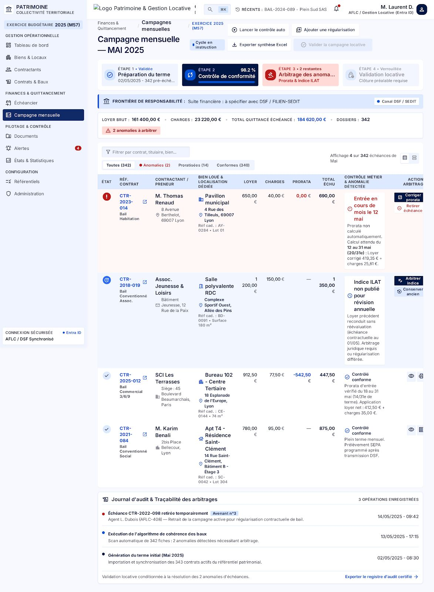
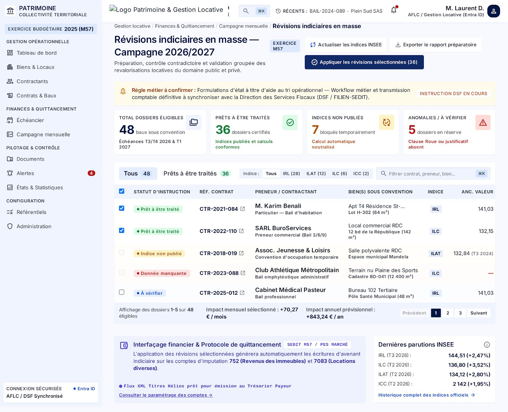
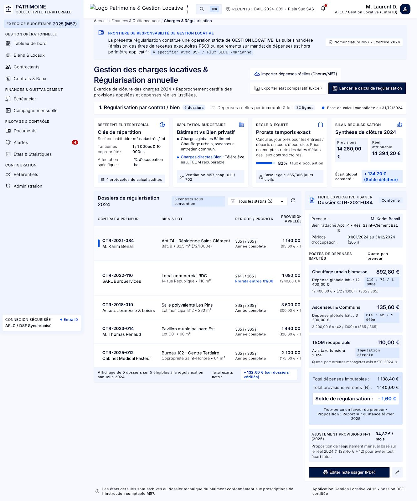
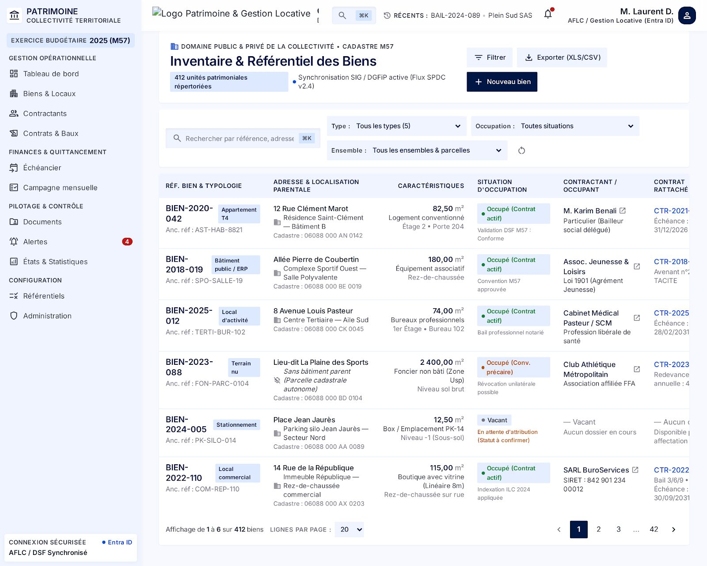

La gestion des baux et des loyers, écrite par une collectivité pour les collectivités.
Du patrimoine loué à l'appel à loyer, VibeLOCATIF suit un bail de bout en bout — biens, contractants, échéancier, révisions, charges, états des lieux, campagne mensuelle et titres de recette. Conçu avec le service qui facture chaque mois, pas vendu à distance.

Le logiciel s'adapte au service, pas l'inverse.
Gérer le patrimoine locatif d'une commune, ce n'est pas seulement éditer une quittance : c'est tenir un référentiel de biens et de personnes, suivre des baux et leurs avenants, calculer des échéances au prorata, appliquer des révisions d'indices, régulariser des charges, produire des états des lieux et pousser chaque mois des titres de recette vers le logiciel financier. VibeLOCATIF a été construit autour de ce circuit réel, avec le service qui l'exécute — et se reparamètre entièrement pour une autre commune.
Un référentiel de biens et de personnes
Logements, locaux et dépendances d'un côté ; bailleurs, preneurs et occupants de l'autre, avec leurs rôles, leurs coordonnées et leur historique — repris du patrimoine existant sans ressaisie.
Un bail suivi de bout en bout
Création, avenants, changement de locataire, résiliation et clôture : chaque contrat garde ses pièces, son échéancier, ses états des lieux et sa traçabilité, sans jamais changer d'outil.
Un échéancier qui calcule seul
Loyers, charges, dépôt de garantie, franchises et prorata au jour près : l'échéancier se génère à partir des conditions du bail et se corrige sans casser l'historique.
Révisions d'indices maîtrisées
Simulation avant application, révisions individuelles ou en masse, indices et dates gérés par le service : on voit le montant avant de le valider, et chaque révision reste datée et justifiée.
Charges et régularisations
Saisie des charges, répartition et régularisation annuelle, rattachement au contrat : les régularisations se calculent et se contrôlent, pas dans un tableur à part.
Campagne mensuelle de facturation
Préparation, contrôle et validation locative des échéances du mois, puis génération du fichier FILIEN destiné à SEDIT — un enchaînement contrôlé, pas un export à retoucher.
États des lieux numériques
Entrée et sortie saisis sur tablette, pièce par pièce : relevés de compteurs, clés, photos horodatées, mentions obligatoires, signatures et scellement PAdES, archivés dans le contrat.
Documents et GED
Modèles Word (appels à loyer, courriers), génération PDF conforme, dépôt et classement dans une vraie gestion documentaire — chaque pièce rattachée à son bien, son contrat ou sa campagne.
Une IA qui propose, jamais qui décide
Analyse des contrats, avenants et pièces, recherche d'informations en langage naturel en lecture seule : l'intelligence artificielle aide à lire et à retrouver, elle ne facture rien à votre place.
Ce que VibeLOCATIF fait, qu'un tableur ne fera jamais.
Un bail qu'on ouvre en entier, pas un dossier Word éparpillé
Toute la vie d'un contrat sur une seule fiche : parties et rôles, conditions financières, échéancier généré, révisions, charges, dépôt de garantie, documents rattachés et journal des modifications. On sait à tout moment ce qui est dû, ce qui a été facturé et ce qui reste à faire.
- Conditions financières, prorata et avenants gérés par le bail
- Pièces, états des lieux et courriers regroupés dans le contrat
- Chaque modification tracée, datée et attribuée à son auteur

De la campagne mensuelle au titre de recette dans SEDIT
La campagne prépare et contrôle les échéances du mois, le service valide, puis l'outil produit le fichier FILIEN attendu par SEDIT — imputations, montants, lots et pièces justificatives comprises. Les titres émis et leur paiement se relisent ensuite dans SEDIT, avec le suivi des impayés.
- Fichier FILIEN conforme aux attentes de SEDIT, encodage et compteurs maîtrisés
- Pièces justificatives dématérialisées rattachées aux titres
- Appels à loyer conformes au format DGFiP (A4, PDF/A, marges techniques)

Révisions d'indices : voir le montant avant de l'appliquer
On simule la révision, on compare, puis on applique — à un contrat ou à tout un lot. L'indice, la date d'effet, l'ancien et le nouveau loyer restent visibles et justifiés, sans ressaisie ni recalcul manuel qui laisse des traces bancales.
- Indices et dates gérés par le service, sans figer le calcul dans le code
- Simulation, comparaison puis application, en masse ou à l'unité
- Historique des révisions conservé pour chaque contrat

Charges, régularisations et documents, au même endroit
Les charges se saisissent et se rattachent au contrat, la régularisation annuelle se calcule et se contrôle, et les pièces produites — courriers, appels à loyer, états des lieux — finissent classées dans la gestion documentaire, pas dans une arborescence de partage réseau laissée à l'abandon.
- Charges saisies et régularisées par contrat, avec le détail conservé
- Documents générés puis archivés dans un plan de classement
- Recherche globale : un locataire, un bien, un contrat, une pièce

Un bail, mais un écosystème complet autour.
VibeLOCATIF ne travaille pas seul : il se branche sur le patrimoine, le logiciel financier et les outils de la collectivité, sans jamais ressaisir une donnée.
Reprise du patrimoine depuis ASTECH
Biens et contractants existants sont repris de la gestion technique et patrimoniale, rapprochés puis contrôlés. Une reprise idempotente qui signale les écarts et les doublons probables, et laisse trancher plutôt que d'écraser.
Facturation vers SEDIT / FILIEN
La facturation de fin de campagne produit le fichier FILIEN attendu par SEDIT, avec ses imputations et ses pièces justificatives, puis relit l'état des titres et des paiements — l'application locative et le logiciel financier parlent la même langue.
Un espace locataire isolé
Les locataires déposent leurs attestations d'assurance et consultent leurs documents depuis une interface publique isolée en zone démilitarisée (DMZ), sans jamais toucher à la base de production.
Gestion documentaire intégrée
Les documents sont stockés sur un filer (dossier ou partage UNC) ou archivés dans Alfresco, avec un plan de classement et une migration possible d'un stockage vers l'autre sans rupture.
Annuaire, mails et notifications
Authentification par l'Active Directory via l'APM, envoi de mails et de notifications depuis les campagnes et les alertes : l'outil utilise ce que la collectivité a déjà plutôt que d'imposer ses comptes.
Une IA interne, en lecture seule
Analyse des documents et questions en langage naturel s'appuient sur des vues dédiées en lecture seule et un modèle interne : aucun texte ni donnée personnelle ne sort du système d'information.
Le patrimoine repris d'ASTECH, écarts et doublons compris
Plutôt que de partir d'une feuille blanche, VibeLOCATIF relit les biens et les contractants de l'existant, les rapproche et met en évidence ce qui diverge. Les doublons probables remontent à l'écran et restent à trancher par un agent : jamais de fusion automatique.
- Reprise idempotente : relancer n'écrase pas les corrections faites à la main
- Contrôle d'écarts entre la source et l'application, objet par objet
- Doublons signalés et arbitrés par le service, pas fusionnés d'office

Une stack ouverte, dockerisée, pensée pour durer.
Les choix techniques ne sont pas neutres : ce sont eux qui décident si une collectivité reste maîtresse de son outil dans dix ans. VibeLOCATIF s'appuie sur ce qui se fait de mieux en logiciel ouvert, et sur les standards attendus par le monde financier local.
React, Node.js, Express, TypeScript
Les technologies web les plus répandues et les mieux outillées : le plus grand vivier de compétences pour reprendre la maintenance, et un typage strict qui élimine des classes entières de bugs avant l'exécution.
PostgreSQL, sans licence
La base de données open source la plus aboutie du marché — recherche plein texte, JSON natif, extensions — sans coût de licence, sans audit de conformité et sans hausse tarifaire décidée par un éditeur.
Dockerisé de bout en bout
L'application se déploie avec Docker Compose, à l'identique en test et en production : installer une instance ou migrer vers un autre serveur tient en une commande, pas en un projet.
Conformité DGFiP intégrée
Les appels à loyer et les pièces destinées à la DGFiP respectent le format attendu : A4, marges techniques de 4 mm, zone réservée, niveaux de gris et PDF/A. La conformité se contrôle dans l'application, pas après impression.
Archivage dans une vraie GED
Les documents produits sont archivés dans Alfresco ou sur un partage surveillé, avec un plan de classement et un enregistrement central — pas un dossier de fichiers qui grossit sans règle.
Sauvegarde automatique et vérifiée
Chaque nuit, une sauvegarde cohérente de la base et des fichiers part vers un dossier réseau, avec empreinte de contrôle et rétention automatique — sans outil externe ni geste manuel à ne pas oublier.
Fait par des territoriaux, pour des territoriaux.
VibeLOCATIF n'a pas été conçu dans les bureaux d'un éditeur puis vendu à des communes qui doivent ensuite s'y plier. Il a été écrit dans une direction des systèmes d'information de collectivité, avec le service qui gère réellement les baux et la facturation — celui qui connaît les prorata, les régularisations, les états des lieux contestés et les relances qu'aucune fiche produit ne prévoit.
Ce n'est pas un jugement sur les éditeurs : certains font bien leur métier. C'est une conviction simple — les outils du quotidien des services publics gagnent à être conçus avec les agents qui les utilisent, pas seulement livrés à distance selon une feuille de route qu'ils ne voient jamais.
Co-construit avec le service
Chaque écran est né d'un besoin réel du service gestion locative et de la direction des finances, pas d'une maquette générique.
Branché sur l'écosystème existant
ASTECH pour le patrimoine, SEDIT et FILIEN pour la facturation, l'APM pour l'annuaire : l'outil s'insère, il ne remplace pas ce qui fonctionne déjà.
Construit avec l'IA, sous supervision humaine
Tests, revue de code et traçabilité comme sur tout développement sérieux — l'intelligence artificielle accélère l'écriture, elle ne remplace pas le contrôle.
Gratuit. Aucun abonnement, aucune licence, aucun coût par fonctionnalité. VibeLOCATIF est né d'un besoin de collectivité, pas d'un modèle commercial à rentabiliser — il se partage comme il a été construit.
Nous écrireEnvie de VibeLOCATIF dans votre collectivité ?
Écrivez-nous : nous en parlons volontiers, montrons l'outil et regardons ensemble ce qu'il faudrait adapter à votre patrimoine et à votre chaîne de facturation.
Pas de dépôt de code public pour l'instant — passez par ce contact plutôt que par un lien de dépôt.